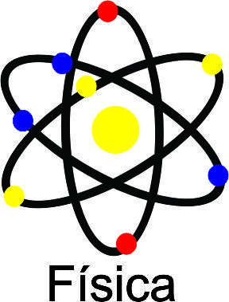

Redação
Estude e treine para obter uma excelente nota no ENEM e teste seus conhecimentos diante os estudos das aulas e melhore seu texto dissertativo-argumentativo. Conteúdos: 5 Competências da redação, tipos de introdução, desenvolvimento e conclusão.
Física

A física permite descobrir as leis gerais da natureza que regulam o desenvolvimento dos processos que se verificam, tanto no universo circundante como no universo em geral. O objetivo é descobrir as leis gerais e esclarecer processos concretos. Conteúdos principais: Movimento Uniforme, Força e as leis de Newton e suas aplicações, Movimento Circular, Energia e as leis de conservação da dinâmica e resistores.


Seu futuro está próximo.
Curiosidades
1º Enem passará a ser 100% digital a partir de 2026.
2º Quantidade de questões quase triplicou.
3º É o segundo exame com mais inscritos no mundo.
https://guiadoestudante.abril.com.br/enem/5-curiosidades-sobre-a-prova-do-enem5 motivos para realizar prova do ENEM
Confira no carrossel a baixo!